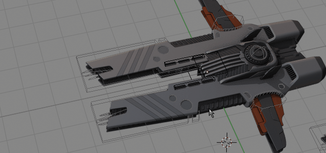

Materials¶
 Replacing Dark material with Grey on objects - without opening group or subgroups
With GroupPro you can quickly change any material on objects inside group, without opening it - using materials menu. You have options to:
- Assign new or existing material to empty material slots
- Replace any material with any other existing materials or new one.
Note: material menu works on any selected objects - it is not limited to only groups.